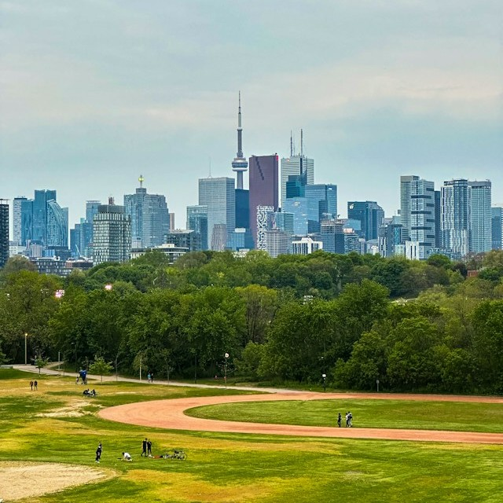

Layered Shadows
Multiple shadow layers create realistic depth that changes on hover.
Shadows, gradients, and filters working together.
Multiple shadow layers create realistic depth that changes on hover.
A subtle gradient on the card background adds dimension without distracting from content.
A grayscale or sepia filter on the image that lifts on hover draws attention to active cards.
This panel uses backdrop-filter to blur and saturate the image behind it. The text stays sharp while the background softens into a frosted surface.
These icons use drop-shadow() instead of box-shadow so the shadow follows the actual shape of each image rather than its bounding box.
This image uses a clip path to cut it into the shape of a circle and cause it to grow with a transition when hovered over.
